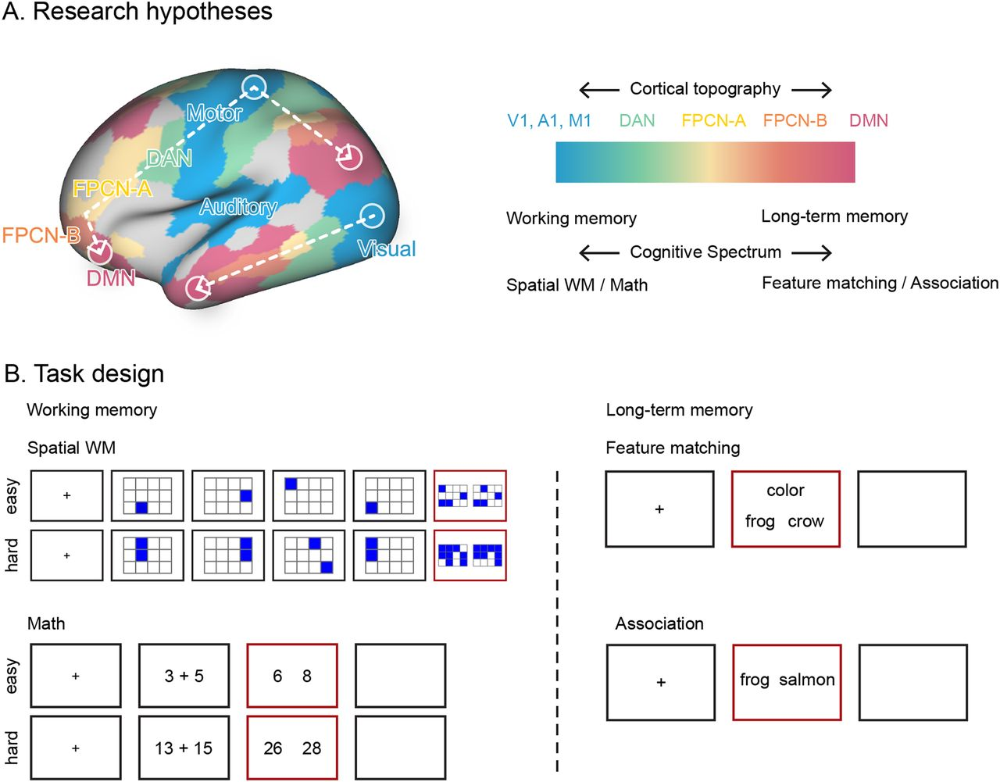

Phd Student Wu Yiyang Published a paper in PLoS Biology

Phd Student Zhang Lei Published a paper in PLoS Biology

Phd Student Wu Guowei Published a paper in Neuroimage

Assistant Research Professor Wang Xiuyi Published a paper in Communications Biology

Post Doc Jin Xinhu Published a paper in Neuroscience Bulletin

Assistant Research Professor Wang Published a paper in Journal of Neuroscience
Explore LASM Lab
Use the navigation pane or the cards below to visit each independent page.
 Principal Investigator
Principal Investigator
 Team
Team
Copyright 2024 All Rights Reserved
Template by WebThemez.com